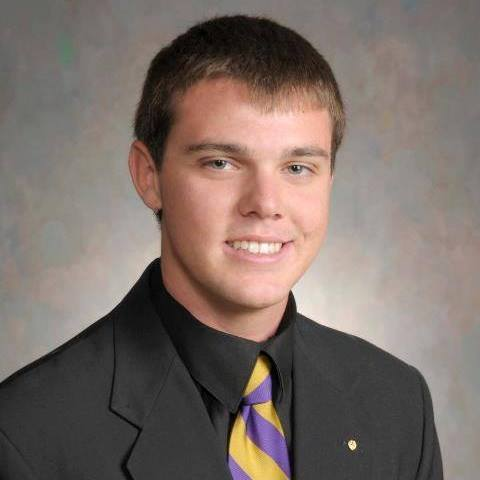
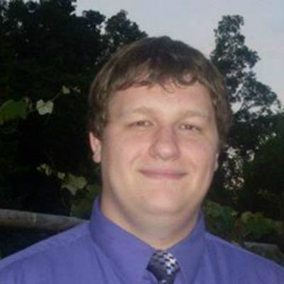
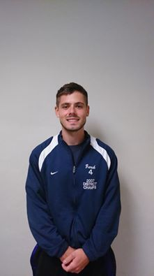
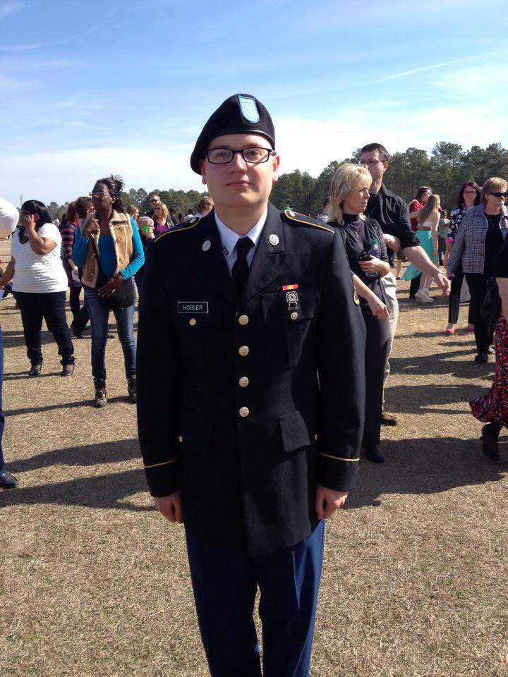
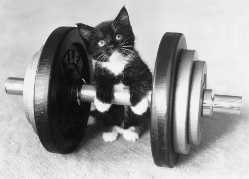

My name is Alyssa Sebastian. I am a senior Computer Information Science; Information Science major.
I transferred to Mansfield from Corning Community College, where I have two degrees from. Over the
summer I interned at The Corning Museum of Glass in their Information Technology department. This
semester I was elected Vice President of the Mansfield University Computer Science Club. I work two
serving jobs where I get to interact with customers and use my salesmanship skills. When I have free
time I love going to the lake with my jet skis and kayaks, or taking my camper away for a weekend
getaway. I love playing team sports, anything from volleyball, softball, golf, and disc golf.
After graduation I hope to find a job between the Corning-Buffalo area.

My name is Kyle Melvin and I am a Junior Computer Information Science: Information Systems major
with a Business Administration minor. I am a Brother of Alpha Kappa Lambda Fraternity, one of 5
Social Fraternities on camps. I currently hold the Recruitment Chair position and serve on the
Executive board. I like to play all kinds of sports and am a huge Philadelphia sports fan.
I like to try new things and would one day like to take a cross county road trip and hit every
single major league baseball stadium. One thing that I would like to get into, in the computer world,
would be computer security.
Adam Moore:
My name is Adam Moore. I am a senior Computer Information Systems major. I currently intern at our
Campus Technologies facility in Memorial Hall. I am also the Parliamentarian of the Mansfield
Activities Council. During my free time I love to play video games, and be around friends. After
graduation I hope to find a career in the Information Security field, and would like to continue
my education in the future.

David Ilgen:
My name is David Ilgen and I am a senior Information Systems major here at Mansfield University. I am currently in my ninth semester as President of Mansfield Activities Council here on campus and have been the chairperson on many events over my time here. I spent a few years working at RadioShack in sales and customer service and have worked at the North Hall Library since I arrived on campus my freshman year. In my spare time I enjoy video games, playing golf, playing soccer, and watching sports.

Dave Zurek:
My name is David Zurek. I am a senior Computer Informations Systems major and a minor in Nutrition and Business Administration. I currently work
at Residence Life as a Maintenance Student Worker. I am currently a student liaison for Student Dietetics Association. I enjoy playing video games and lifting at Kelchner Fitness Center.

Matt Hobler:
Matt is currently on Pope Duty in Philadelphia and was not able to make the presentation.

Devin Zeyher:
My name is Devin Zeyher and I am a Junior Computer Information Science: Information Systems major.
I am a brother of Sigma Tau Gamma here at Mansfield. I am on the Executive Board and hold the
position of Recruitment Chair. I am a huge Subaru fan. Most of the time I spend the warm months
fishing. I enjoy football, hockey, basketball, biking, and video games here and there. Furthering
my career in the Information Systems field would be awesome. My plan is to get a job at a solid
place where I can start a career right off the bat and continue to work my way up to a high position
with the company.